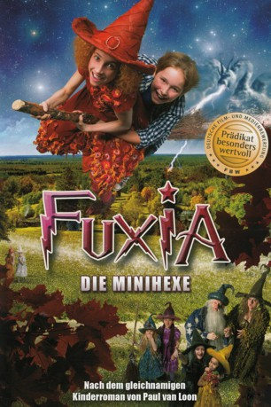

#5244 Fuxia, die Minihexe
 
 IMDB-Wertung: 5.6 / 10
IMDB-Wertung: 5.6 / 10  Metascore: 0
Metascore: 0 
Manchmal können große Abenteuer aus dem kleinsten Ei schlüpfen. Das zumindest lernt der Zauberer Kwark, als er ein Ei im Hexenwald findet. Aus diesem schlüpft nämlich kein Vogel sondern ein ganz besonderes kleines Mädchen: Eine Minihexe mit dem Namen Fuxia. Die ehrgeizige Fuxia geht schon bald in die Hexenschule zu Miss Minuul, denn sie möchte, genau wie ihr Ziehvater Kwark, eine erfolgreiche Hexe werden. ...
Jahr: 2010
Dauer: 84 Minuten
FSK: 6
Land: Niederlande Studio: KSMTonspuren:
Untertitel:
Auflösung: 1080p (1920x816) Größe: 4577 MB
Genre: Familie
Regisseur: Johan Nijenhuis
Drehbuch: Kenya Barris
Soundtrack:
Darsteller:
- Annet Malherbe als Minuul
 Marcel Hensema als Oom Rogier
Marcel Hensema als Oom Rogier- Patrick Stoof als Werkman
- Sytske van der Ster als Moerasheks Gruwela
- Rachelle Verdel als Foeksia
- Porgy Franssen als Kwark
- Lorenso van Sligtenhorst als Tommie
- Kara Borus als Akabahar
- Eefje Paddenberg als Argje
- Melanie Reindertaen als Grit
- Chantal Wildering als Grobje
- Valerie Pos als Murmeltje
- Lauren Schuitemaker als Saffraan
- Leny Breederveld als Burgemeester
- Elvira Out als Moeder Tommie
- Steye van Dam als Werkman
- Yehye Galer als Werkman
- John Wijdenbosch als Werkman
- Esther van Boxtel als Moerasheks Grizelda
- Nicole Berendsen als Moerasheks Amphelia
- Marianca Beelen als Kelderheks
- Arianne Fennema als Heks van Nassauwe
- Corine van Opstal als Vlechtheks
- Peggy Sandaal als Saffraanheks
- Monira Macintosh als Saffraanheks
- Jennifer Boldewijn als Saffraanheks
- Frances de Jong als Poolheks
- Daphne Desters als Poolheks
- Eline Vroom als Poolheks
- Frederique Sluyterman van Loo als Zeeheks
- Jolanda van den Berg als Zeeheks
- Annelies Herfst als Zeeheks
- Coen van Kasteel als Bewaker
- Laurens ten Dam als Man met snor
- Paul van Loon als Voorleesvader
- Claire Steenbergen als Voorleeskind
Datei: X:\Kinder Filme (A-F)\Fuxia, die Minihexe (2010, FSK6, 1920x816).mkv seit 04.01.2017
Festplatte: Kinder-Filme+Trick
 Es gibt insgesamt 68 Filme in der Gruppe 'Kinder Filme (A-F)'
Es gibt insgesamt 68 Filme in der Gruppe 'Kinder Filme (A-F)'